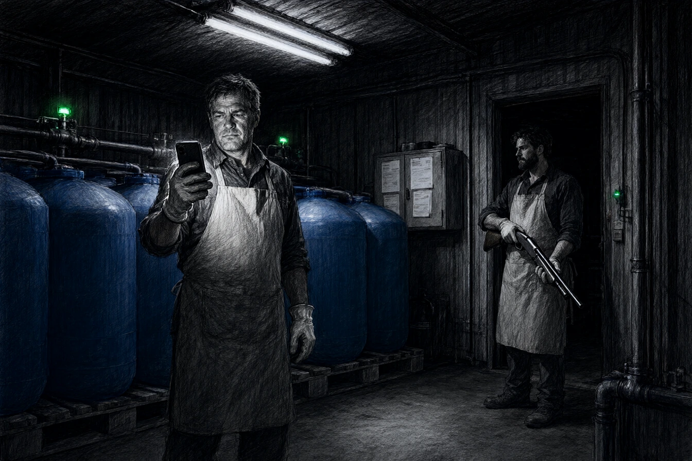

À la sortie de Molsheim, les trois hectares de l'Arche Verte déployaient leurs buttes de permaculture sous des filets anti-grêle d'un blanc chirurgical. Le gravier de la cour crissait sous les pneus des berlines venues de Strasbourg pour la vente du samedi. Près de la grange rénovée à la chaux, des ardoises calligraphiées vantaient des panais d'antan et des carottes pourpres à neuf euros le kilo.
Marc Dubois, penché sur un rang de blettes, tirait sur le liseron avec des gants de toile neuve. Il avait payé deux cent cinquante euros son stage d'immersion paysanne du week-end et s'était présenté comme professeur d'histoire en congé sabbatique. À cinquante-deux ans, Marc avait le dos raide des vieux reporters et l'œil exercé aux impostures trop lisses.
Autour de lui, sept autres stagiaires en gilets de toile écoutaient Thomas parler du sol comme d'un être sensible. Une retraitée en chapeau de paille notait ses phrases dans un carnet. Une jeune femme photographiait les buttes pour sa chaîne de jardinage. Un homme en pantalon de chino crème demandait si le stage donnait droit à un certificat.
« Le certificat, c'est la terre qui le donne, répondit Thomas. Pas un bureau. »
Il portait un tablier de lin brut, des bottes de cuir souple, et sa barbe blonde était taillée comme une haie de jardin ouvrier. À ses côtés, Émilie filmait un gros plan de motte avec un stabilisateur de poing.
« Regarde comme le mycélium respire, disait-elle à l'objectif de son smartphone. Pas une goutte de chimie, rien que l'alliance du vivant et de la patience. »
Elle coupa l'enregistrement, rangea l'appareil dans sa salopette de marque et jeta un regard distrait aux blettes de Marc.
« Ne cassez pas les radicelles, monsieur Dubois. La permaculture est une affaire d'amour du sol, pas un déblayage de chantier. »
Marc essuya son front d'un revers de manche.
« Vos rendements sont impressionnants pour un sol de coteau aussi maigre, madame. Chez mon beau-frère, dans le Sundgau, les premières récoltes après conversion mettent trois saisons à sortir de terre. »
Thomas eut un rictus d'agacement qui plissa sa barbe.
« Votre beau-frère n'a pas notre protocole de dynamisation microbienne. Nous utilisons des ferments d'altitude préparés sur mesure. Quand on respecte les cycles cosmiques, la matière répond. »
Marc regarda les feuilles des blettes. Elles étaient larges comme des pelles de terrassier, luisantes d'un vert bleuté que l'on ne voyait nulle part dans les jardins ouvriers de l'Ill. Le sol, sous la paille, était noir et tiède, sans un cloporte, sans une limace. Les tuyaux d'irrigation couraient sous le paillage, à peine visibles, et la pompe à variateur bourdonnait derrière la haie.
À onze heures, la cour se remplit. Un couple de retraités acheta trois kilos de panais et un pot de miel. Une jeune mère demanda si les carottes pouvaient être données à un bébé de dix mois ; Émilie répondit que tout ici était « plus sûr que le lait en poudre ». Un cuisinier en veste blanche sortit de sa voiture, palpa une botte de blettes et dit qu'il en voulait vingt kilos pour le week-end.
« Neuf euros le kilo, dit Thomas. »
« Chez les autres, c'est le double. »
« C'est le prix du vivant. »
Le cuisinier paya sans discuter. Marc acheta un kilo de carottes pourpres et observa Thomas encaisser : un terminal sans contact, une caisse en bois, pas de ticket. Émilie inscrivait les ventes dans un carnet à couverture de toile.
« Vous ne mettez pas de facture ? demanda Marc. »
« Les clients n'en veulent pas. Ils veulent une histoire. »
* * *
À deux heures du matin, une chouette hulula vers le clocher de Mutzig. La ferme dormait. Le vent descendait du coteau, chargé d'une odeur de foin mouillé. Marc s'extirpa du dortoir des stagiaires par la fenêtre des combles, descendit le long d'une gouttière en zinc et contourna le poulailler mobile. Le gravier crissa sous ses chaussures ; il s'arrêta, compta jusqu'à dix, repartit.
Au fond du verger, un hangar métallique gris souris se dissimulait derrière une haie d'aulnes d'Allemagne. Le bâtiment ne figurait sur aucune des vidéos de l'Arche Verte. Un cadenas à combinaison bloquait la porte latérale. Marc inséra une réglette d'acier trempé entre le corps et l'anneau du cadenas. La tige céda dans un claquement sec.
Une odeur d'ammoniaque et de chlore lui piqua la gorge. À l'intérieur, point de foin ni d'outils de forge. Deux rangées de cuves en polyéthylène bleu de mille litres s'alignaient sur des palettes de rétention. Des tuyaux d'irrigation goutte-à-goutte sous pression partaient des cuves, reliés à une centrale de pompage numérique dont les diodes vertes pulsaient dans la pénombre. Sur une table pliante, des combinaisons de protection jetables, une paire de gants, un masque à cartouche et un carnet à spirale.
Marc braqua la torche de son téléphone sur l'étiquette d'un fût. Le logo d'OmniCorp s'y détachait en noir sur fond jaune, au-dessus de la mention technique : Division Agri-Tech, site de Bâle. Solution d'activation foliaire N-44. Réservé aux protocoles expérimentaux sous serre étanche. Ne pas disperser en nappe phréatique.
Le carnet s'ouvrait sur un tableau : date, parcelle, nombre de litres, durée d'irrigation. Les doses augmentaient à partir de mai. En marge, une écriture penchée avait noté : « ne pas mentionner dans le dossier de certification ». Plus loin, une page arrachée avait laissé un talon : « protocole N-44, version 3, application foliaire, dilution 1/200, délai avant récolte : 48 h. » Marc photographia chaque page.
Dans une armoire murale, des bordereaux de livraison portaient le nom de Thomas et la signature de validation d'un inspecteur régional de l'organisme de certification biologique, datée du mois précédent avec la mention Échantillonnage réputé conforme. Sous les bordereaux, une enveloppe contenait une facture d'OmniCorp Agri-Tech pour « prestation de recherche et fourniture de solution N-44 », payable à trente jours. Le montant équivalait à deux échéances du Crédit Agricole. Pas un euro de plus.
Le déclic d'un interrupteur claqua derrière son épaule. Deux tubes fluorescents s'allumèrent au plafond avec un bourdonnement nasillard.
Thomas se tenait dans l'encadrement, les yeux rougis, un fusil de chasse à canon scié calé sous le coude. Derrière lui, Émilie, en parka sur une chemise de nuit, regardait le carnet ouvert.
* * *
« Pose le téléphone sur la palette, dit Thomas. Doucement. »
Marc ne bougea pas. Il garda l'appareil à hauteur de torse.
« C'est du calibre douze, mon garçon. Si tu tires ici, les vapeurs d'ammoniaque te sautent au visage avant que la chevrotine n'atteigne le mur », dit Marc.
« Tu ne sais pas de quoi tu te mêles, Dubois. Tu crois qu'on fait vivre une exploitation avec des paniers à vingt balles et trois kilos de topinambours bouffés par les mulots ? », dit Thomas.
« Je sais que vos clients paient le triple pour nourrir leurs gosses avec du terreau propre, et que vous arrosez vos planches avec un défoliant de laboratoire », dit Marc.
« Le Crédit Agricole ne nous demandait pas si nos carottes avaient une âme quand il fallait rembourser sept mille euros d'échéance par mois ! cria Thomas, la voix étranglée. »
Il abaissa le canon vers le sol de béton, les mains tremblantes.
« On avait tout mis. Nos indemnités de départ, le studio d'Émilie à Schiltigheim, le compte épargne des vieux. La première année, la grêle a couché les tomates en vingt minutes. Les banques fermaient les robinets. Et puis un commercial d'OmniCorp est venu un dimanche. Il nous a proposé le hangar, les cuves et un contrat de recherche. La solution, on la payait à la cuve. On ne vend pas du poison ; on teste des accélérateurs de captation d'azote. Les légumes sont magnifiques. »
« Et le label bio ? »
« OmniCorp paie l'auditeur. C'est le même bureau qui valide les bilans carbone de la métropole. Tout le monde est content. Les abonnés pleurent d'émotion devant nos salades et nous payons nos traites. »
Émilie fit un pas dans le hangar. Elle ne regardait pas Marc ; elle regardait le carnet, ouvert sur la table, et les photos qu'il avait prises.
« Tu vas publier ? demanda-t-elle. »
« Dimanche. »
« Tu as des enfants ? »
« Deux grands. »
« Alors tu sais ce qu'on fait pour eux. »
Marc rangea le téléphone. Il ne dit rien. Thomas baissa le fusil jusqu'au sol.
« Laisse-nous la saison, dit Thomas. Après, on ferme. On part. Personne n'aura besoin de savoir. »
« La saison, c'est trois mois de carottes pour les gosses des autres. »
« Et nous ? »
Marc passa devant eux. Sur le seuil, il se retourna.
« Le papier sort dimanche en huit dans les pages régionales. Préparez vos avocats. »
* * *
Le dimanche suivant, la rédaction sentait le café brûlé et le papier journal. Paul Brand relut l'article deux fois, le stylo en travers de la bouche, puis posa les feuilles sur la table.
« Les photos sont bonnes. Les bordereaux aussi. Le carnet, c'est du miel. »
« L'avocat a vu ? »
« Il a vu. Il demande qu'on retire le nom de l'inspecteur. »
« Il est sur les bordereaux. »
« On le met en initiales. Le reste tient. »
« Il n'a pas demandé comment on est entrés ? »
« Il a demandé si la porte était fermée. »
« Elle l'était. »
« Alors il n'a plus rien demandé. »
L'article parut sous le titre : L'Arche Verte et l'alchimie d'OmniCorp : sous le bio, l'usine chimique. Les photos des cuves N-44 et les fac-similés des bordereaux firent le tour des groupes Facebook du Bas-Rhin en une matinée. À midi, le compte Instagram de l'exploitation était suspendu. À dix-sept heures, la préfecture ordonnait la mise sous séquestre des légumes et la suspension des agréments.
Dans la journée, trois clients appelèrent la rédaction pour dire qu'ils « savaient » que quelque chose clochait, sans avoir jamais rien dit. Un maraîcher de Dorlisheim, concurrent de l'Arche, envoya un communiqué de trois lignes pour saluer « le travail de la presse ». L'organisme de certification publia un démenti : l'auditeur n'avait fait que « constater la conformité documentaire ». Personne ne parla des carottes déjà mangées.
Trois mois plus tard, Marc Dubois longeait les grilles de l'exploitation au volant de sa vieille berline.
L'ardoise à l'entrée avait été décrochée. Une pancarte neuve, frappée du sigle d'une coopérative agricole du Bas-Rhin affiliée à la chambre d'agriculture, annonçait l'ouverture prochaine d'une plateforme d'essais agronomiques connectés. Un QR code renvoyait à une visite virtuelle. Dans la cour, deux ouvriers agricoles en combinaison blanche déchargeaient des fûts bleus identiques d'une remorque à ridelles.
Thomas et Émilie avaient disparu des registres municipaux. La semaine qu'il leur avait laissée avait suffi. Les rumeurs disaient qu'ils géraient désormais une table d'hôtes écoresponsable dans le canton de Vaud, loin des terres alsaciennes.
Sur le siège passager, Marc dépliait la liasse que son confrère Brand lui avait transmise le matin même : le rapport préliminaire de l'agence régionale de santé, et, agrafé derrière, un extrait des statuts déposés au greffe de Colmar. Au bas de la dernière page, dans la liste des sociétaires de la coopérative repreneuse, figurait une ligne unique : OmniCorp Agri-Tech Participations, domiciliée à Bâle.
Marc replia le document, le glissa dans sa boîte à gants et passa la première vitesse sans un regard pour les filets anti-grêle.